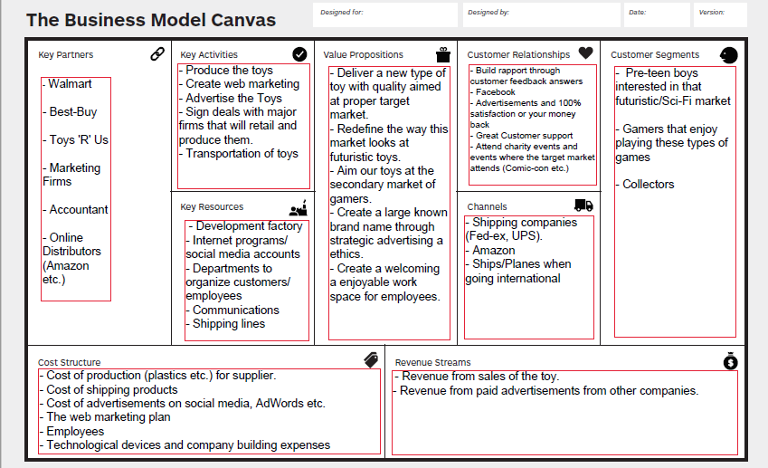

NOT STARWARS TOYS (CSC 101 Homework 3)
Web Marketing Plan:
First I would figure out my target market which includes the age group of my customers (pre-teen boys).
Creating accounts along all Social Media sites and potential Advertisement sites would then be ideal. Posting strategic advertisements
to these sites is great for attracting this target market as many are utilizing Social Media now. $500 budget for clicks is a good intial investment for ads.
Advertise using good AdWords with key search words will attract customers based on their search entries in google.
This price scales with how many clicks there are. Budgeting at around $300 for the adwords would be realistic with keywords that include toys, star-wars toys, futuristic, action etc.
Create a brand in order for customers to recognize the product. With this create a customer feedback page in order to create rapport and induce refferals
Make well-made video ads and market them online (youtube) to attract pre-teens, $200.
Utilize googles analytical algorithms to track all marketing campaigns and determine what needs to be changed/kept.
Business Canvas
